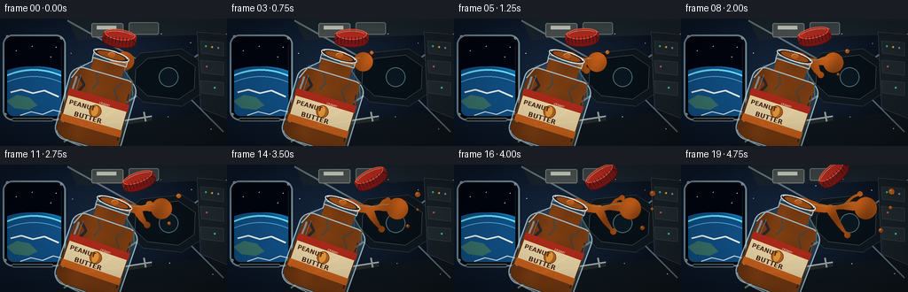
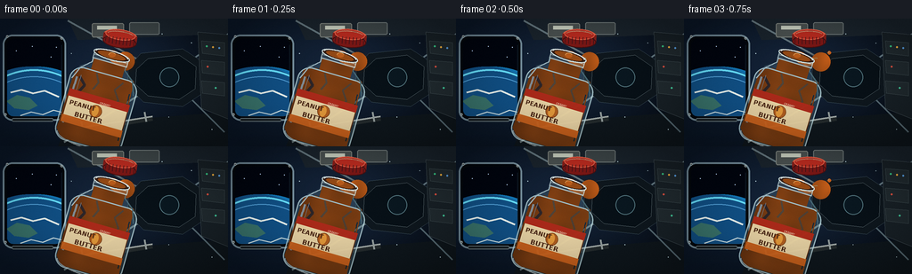

CODING AGENTS AS PIXEL WORLD MODELS
traex/GPT-5.6-Sol · mechanics_0001
点击播放 · 原生 RGB 像素
逐轮保存的候选
回放视频、检查图与代码变化。
每份候选均可单独播放。实际图片检查记录在下方工具轨迹中。
候选 01播放与检查图
点击播放 · 原生 RGB 像素


展开代码变化
--- 上一保存版本
+++ 本次保存版本
@@ -0,0 +1,293 @@
+from pathlib import Path
+import json, math
+import numpy as np
+from PIL import Image, ImageDraw, ImageFont, ImageFilter
+import cv2
+import artifact_io
+
+CASE_DIR = Path(__file__).resolve().parent
+SPEC = json.loads((CASE_DIR / 'task_spec.json').read_text())
+W, H, N = SPEC['width'], SPEC['height'], SPEC['frames']
+S = 3
+SW, SH = W*S, H*S
+RNG = np.random.default_rng(7319)
+FONT_BOLD = '/usr/share/fonts/truetype/dejavu/DejaVuSans-Bold.ttf'
+FONT_REG = '/usr/share/fonts/truetype/dejavu/DejaVuSans.ttf'
+
+def q(v): return int(round(v*S))
+def box(vals): return tuple(q(v) for v in vals)
+def poly(vals): return [(q(x), q(y)) for x,y in vals]
+
+def font(path, size):
+ try: return ImageFont.truetype(path, q(size))
+ except: return ImageFont.load_default()
+
+def rounded_mask(size, rect, radius):
+ m = Image.new('L', size, 0)
+ ImageDraw.Draw(m).rounded_rectangle(rect, radius=radius, fill=255)
+ return m
+
+def draw_background(frame):
+ t = frame/(N-1)
+ yy, xx = np.mgrid[0:SH, 0:SW]
+ xn, yn = xx/S, yy/S
+ # Cold metal interior with a soft practical-light glow.
+ glow = np.exp(-(((xn-136)/106)**2 + ((yn-54)/74)**2))
+ leftlight = np.clip(1-xn/W, 0, 1)
+ arr = np.zeros((SH,SW,3), np.float32)
+ arr[...,0] = 6 + 12*glow + 5*leftlight
+ arr[...,1] = 12 + 18*glow + 11*leftlight
+ arr[...,2] = 20 + 27*glow + 19*leftlight
+ im = Image.fromarray(np.uint8(np.clip(arr,0,255)), 'RGB').convert('RGBA')
+ d = ImageDraw.Draw(im, 'RGBA')
+
+ # Recessed Earth-observation window on the left.
+ d.rounded_rectangle(box((3,18,74,115)), radius=q(11), fill=(3,7,13,255), outline=(120,146,160,210), width=q(2))
+ d.rounded_rectangle(box((8,23,69,110)), radius=q(8), fill=(1,7,18,255), outline=(39,66,85,255), width=q(3))
+ win = Image.new('RGBA',(61*S,87*S),(1,5,15,255))
+ wd = ImageDraw.Draw(win,'RGBA')
+ # stars
+ for sx,sy,a in [(10,13,180),(28,8,120),(49,20,210),(42,36,105),(17,38,135),(55,9,150)]:
+ wd.ellipse((q(sx)-1,q(sy)-1,q(sx)+2,q(sy)+2),fill=(190,220,255,a))
+ # Earth limb, cloud decks, and atmospheric cyan edge.
+ for r,col in [(83,(20,123,188,70)),(80,(18,115,177,255)),(75,(17,81,135,255))]:
+ wd.ellipse(box((-50,31,-50+2*r,31+2*r)), fill=col)
+ wd.arc(box((-47,34,107,188)), 206, 327, fill=(104,227,255,235), width=q(2.0))
+ wd.arc(box((-43,42,103,182)), 205, 325, fill=(83,162,218,160), width=q(1.0))
+ wd.polygon(poly([(-1,70),(11,63),(25,66),(34,75),(24,80),(8,78)]),fill=(58,117,109,140))
+ wd.line(poly([(4,60),(16,57),(29,61),(42,58),(58,65)]),fill=(238,246,242,175),width=q(2))
+ wd.line(poly([(15,86),(27,82),(40,85),(52,80),(64,83)]),fill=(222,239,240,130),width=q(1.4))
+ wmask = rounded_mask(win.size, box((0,0,61,87)), q(7))
+ win.putalpha(wmask)
+ im.alpha_composite(win,(q(8),q(23)))
+ d = ImageDraw.Draw(im,'RGBA')
+ # Window fasteners and handle.
+ for px,py in [(8,20),(69,22),(6,108),(69,108)]:
+ d.ellipse(box((px-1.4,py-1.4,px+1.4,py+1.4)),fill=(176,192,195,255))
+ d.line(poly([(px-.8,py),(px+.8,py)]),fill=(51,58,61,255),width=q(.5))
+ d.rounded_rectangle(box((13,112,60,116)), radius=q(2), fill=(22,29,34,255), outline=(109,125,130,220), width=q(1))
+
+ # Laboratory module ribs and converging perspective structures.
+ vanish=(189,65)
+ d.polygon(poly([(76,0),(256,0),(256,17),(87,24)]),fill=(27,37,46,255))
+ d.line(poly([(76,2),(vanish[0],vanish[1])]),fill=(104,123,131,150),width=q(2))
+ d.line(poly([(256,17),(vanish[0],vanish[1])]),fill=(104,126,136,180),width=q(2))
+ d.polygon(poly([(75,119),(256,105),(256,144),(65,144)]),fill=(15,23,29,255))
+ d.line(poly([(72,139),(vanish[0],vanish[1])]),fill=(106,121,124,145),width=q(2))
+ d.line(poly([(252,128),(vanish[0],vanish[1])]),fill=(90,111,120,145),width=q(2))
+ # Far hatch in the module.
+ hatch=[(158,39),(205,34),(231,51),(229,83),(205,99),(161,94),(143,76),(144,55)]
+ d.polygon(poly(hatch),fill=(15,24,31,240),outline=(73,94,104,255))
+ inner=[(166,45),(201,41),(220,54),(219,79),(201,91),(166,87),(152,74),(153,57)]
+ d.polygon(poly(inner),fill=(8,17,24,255),outline=(114,131,136,170))
+ d.ellipse(box((179,55,201,77)),fill=(10,24,33,255),outline=(83,117,126,200),width=q(1))
+ # Right equipment rack.
+ d.polygon(poly([(222,15),(256,18),(256,113),(226,101)]),fill=(25,34,40,255),outline=(87,102,108,190))
+ for y0 in [25,47,70]:
+ d.polygon(poly([(226,y0),(252,y0+2),(252,y0+17),(227,y0+14)]),fill=(34,44,49,255),outline=(73,88,92,210))
+ for px,py,col in [(232,31,(58,210,139,255)),(239,32,(255,185,65,255)),(246,33,(92,166,236,255)),(233,54,(232,83,66,255)),(242,78,(68,211,161,255))]:
+ d.ellipse(box((px-1,py-1,px+1,py+1)),fill=col)
+ # Ceiling cargo pouches and labels.
+ d.rounded_rectangle(box((103,5,139,21)),radius=q(2),fill=(77,84,83,185),outline=(129,135,129,180),width=q(1))
+ d.rectangle(box((109,8,131,12)),fill=(207,214,198,150))
+ d.rounded_rectangle(box((145,4,179,18)),radius=q(2),fill=(63,72,74,210),outline=(116,126,126,180),width=q(1))
+ # Handrail behind the jar.
+ d.line(poly([(83,126),(171,112)]),fill=(36,43,45,255),width=q(6))
+ d.line(poly([(83,124),(171,110)]),fill=(164,172,169,230),width=q(2))
+ for x0,y0 in [(91,121),(162,110)]:
+ d.line(poly([(x0,y0-5),(x0+2,y0+6)]),fill=(151,161,160,240),width=q(2))
+ # Soft floating motes reinforce the weightless volume.
+ motes=[(80,38),(90,61),(153,25),(191,112),(214,28),(73,132),(183,16),(239,124)]
+ for i,(mx,my) in enumerate(motes):
+ dx=1.8*math.sin(t*2.1+i*1.7); dy=1.2*math.cos(t*1.6+i)
+ a=65+(i%3)*25
+ d.ellipse(box((mx+dx-.45,my+dy-.45,mx+dx+.45,my+dy+.45)),fill=(194,222,230,a))
+ return im
+
+def make_jar(frame):
+ t=frame/(N-1)
+ size=(140*S,140*S)
+ jar=Image.new('RGBA',size,(0,0,0,0))
+ # Body masks: rounded lower jar plus sloped shoulders and neck.
+ body=Image.new('L',size,0); bd=ImageDraw.Draw(body)
+ bd.rounded_rectangle(box((31,43,109,128)),radius=q(14),fill=255)
+ bd.polygon(poly([(34,55),(39,42),(51,34),(51,25),(89,25),(89,34),(102,43),(107,55)]),fill=255)
+ bd.rectangle(box((51,20,89,42)),fill=255)
+ # cool transparent glass base
+ glass=np.zeros((140*S,140*S,4),np.uint8)
+ glass[...,0]=120; glass[...,1]=166; glass[...,2]=181; glass[...,3]=np.array(body)*0.22
+ jar.alpha_composite(Image.fromarray(glass,'RGBA'))
+ # Peanut butter fills almost to the mouth.
+ pbm=Image.new('L',size,0); pd=ImageDraw.Draw(pbm)
+ pd.rectangle(box((52,24,88,47)),fill=255)
+ pd.polygon(poly([(35,48),(48,42),(60,44),(72,41),(87,44),(102,42),(106,119),(98,126),(41,126),(33,117)]),fill=255)
+ # clip by jar body
+ pbarr=np.minimum(np.array(pbm),np.array(body))
+ Y,X=np.mgrid[0:140*S,0:140*S]
+ shade=0.66+0.25*(X/(140*S))+0.12*np.exp(-((X/S-58)/12)**2)
+ noise=3*np.sin(X/15+Y/31)+2*np.sin(Y/9)
+ pba=np.zeros((140*S,140*S,4),np.uint8)
+ pba[...,0]=np.clip(145*shade+noise,0,255)
+ pba[...,1]=np.clip(72*shade+noise*.35,0,255)
+ pba[...,2]=np.clip(22*shade,0,255)
+ pba[...,3]=pbarr
+ jar.alpha_composite(Image.fromarray(pba,'RGBA'))
+ jd=ImageDraw.Draw(jar,'RGBA')
+ # Thick folds visible through the glass.
+ for pts,wid,fill in [([(42,54),(50,62),(45,72),(54,83)],3,(106,48,14,80)),
+ ([(91,48),(84,58),(91,68),(85,82),(92,94)],2,(235,145,55,70)),
+ ([(59,45),(64,55),(60,64)],2,(248,162,64,70))]:
+ jd.line(poly(pts),fill=fill,width=q(wid),joint='curve')
+ # Glass contour, facets and bottom thickness.
+ jd.rounded_rectangle(box((31,43,109,128)),radius=q(14),outline=(190,223,229,205),width=q(1.4))
+ jd.line(poly([(34,58),(40,44),(51,34),(51,25)]),fill=(207,234,238,190),width=q(1.2))
+ jd.line(poly([(106,59),(101,44),(89,34),(89,25)]),fill=(87,126,137,190),width=q(1.2))
+ jd.arc(box((34,109,106,130)),0,180,fill=(224,241,241,160),width=q(1.3))
+ jd.line(poly([(39,55),(38,109)]),fill=(237,250,250,130),width=q(2.2))
+ jd.line(poly([(43,52),(42,85)]),fill=(255,255,255,115),width=q(.7))
+ jd.line(poly([(101,58),(103,112)]),fill=(37,66,73,90),width=q(1.5))
+ # Printed cream label.
+ jd.rounded_rectangle(box((35,70,105,108)),radius=q(3),fill=(236,215,167,248),outline=(94,47,19,235),width=q(1))
+ jd.rectangle(box((35,70,105,78)),fill=(174,43,27,250))
+ jd.rectangle(box((35,100,105,108)),fill=(206,100,28,245))
+ jd.ellipse(box((63,80,77,94)),fill=(176,94,31,255),outline=(115,57,18,255),width=q(.7))
+ jd.ellipse(box((66,81,73,93)),fill=(226,152,58,255))
+ title=font(FONT_BOLD,6.8)
+ title2=font(FONT_BOLD,7.5)
+ tiny=font(FONT_REG,3.1)
+ # Center text on each side of the peanut icon enough to remain readable.
+ jd.text((q(39),q(81)), 'PEANUT',font=title,fill=(72,36,18,255),stroke_width=0)
+ jd.text((q(48),q(92)), 'BUTTER',font=title2,fill=(72,35,17,255),stroke_width=0)
+ jd.text((q(72),q(75)), 'CREAMY',font=tiny,fill=(255,241,205,245))
+ # Neck threading, dark open mouth, and peanut butter at the lip.
+ jd.rectangle(box((50,20,90,30)),fill=(157,186,192,55),outline=(207,231,232,210),width=q(1))
+ for yy0 in [21.5,25.5,29]:
+ jd.line(poly([(51,yy0),(89,yy0)]),fill=(218,237,238,180),width=q(.8))
+ jd.ellipse(box((49,16,91,27)),fill=(53,30,19,255),outline=(208,228,228,255),width=q(1.2))
+ jd.ellipse(box((54,18,86,25)),fill=(151,75,22,255))
+ jd.arc(box((51,16,89,27)),185,352,fill=(250,255,250,235),width=q(1))
+ # moving orientation
+ angle=-16.0-5.0*t
+ jar=jar.rotate(angle,resample=Image.Resampling.BICUBIC,expand=False)
+ pos=(42+2.5*t,18+1.2*math.sin(t*math.pi))
+ # transformed local mouth center for matching the plume
+ theta=math.radians(angle); cx=cy=70; px,py=70,21
+ rx=cx+math.cos(theta)*(px-cx)+math.sin(theta)*(py-cy)
+ ry=cy-math.sin(theta)*(px-cx)+math.cos(theta)*(py-cy)
+ anchor=(pos[0]+rx,pos[1]+ry)
+ return jar,(q(pos[0]),q(pos[1])),anchor,angle
+
+def fluid_layer(frame, anchor):
+ t=frame/(N-1)
+ layer=Image.new('RGBA',(SW,SH),(0,0,0,0))
+ mask=Image.new('L',(SW,SH),0); md=ImageDraw.Draw(mask)
+ x0,y0=anchor
+ # Slow extension, substantial enough to read in the first frame.
+ length=15+61*(t**0.88)
+ head=(x0+length, y0+4+7*math.sin(0.85*t+0.15))
+ samples=[]
+ for i in range(41):
+ s=i/40
+ # A heavy, gently coiling zero-g ribbon.
+ x=x0+length*s
+ y=y0 + 7.0*s + (3.2+2*t)*math.sin(math.pi*s*1.25+0.4*t)*math.sin(math.pi*s)
+ samples.append((x,y))
+ neck=(1-0.58*t*math.exp(-((s-.56)/.14)**2))
+ rad=(5.2-1.6*s+1.15*math.sin(3.1*math.pi*s)**2)*neck
+ if s>.84: rad += (6.8+2.0*t)*((s-.84)/.16)**1.5
+ md.ellipse(box((x-rad,y-rad,x+rad,y+rad)),fill=255)
+ # Side tendril splits downward from the cohesive mass.
+ if t>.20:
+ u=(t-.20)/.80
+ bx=x0+length*.48; by=samples[19][1]+1
+ branch_len=7+22*u
+ for i in range(22):
+ s=i/21
+ x=bx+branch_len*s*.65
+ y=by+branch_len*s + 2*math.sin(s*math.pi)
+ r=(3.5*(1-s)+1.6)*(1-.35*u*s)
+ md.ellipse(box((x-r,y-r,x+r,y+r)),fill=255)
+ md.ellipse(box((bx+branch_len*.65-3.5,by+branch_len-3.5,bx+branch_len*.65+3.5,by+branch_len+3.5)),fill=255)
+ # Wispy upper lobe appears later.
+ if t>.48:
+ u=(t-.48)/.52; bx=x0+length*.69; by=samples[28][1]-2
+ pts=[]
+ for i in range(18):
+ s=i/17; x=bx+17*u*s; y=by-12*u*s-2*math.sin(math.pi*s); pts.append((q(x),q(y)))
+ md.line(pts,fill=255,width=q(max(1.8,4.2-1.1*u)),joint='curve')
+ md.ellipse(box((bx+17*u-3,by-12*u-3,bx+17*u+3,by-12*u+3)),fill=255)
+ # Detached beads travel ahead at different rates.
+ drops=[]
+ if t>.14:
+ u=(t-.14)/.86; drops.append((x0+length+9+20*u,y0-3-9*u,2.0+1.2*u))
+ if t>.36:
+ u=(t-.36)/.64; drops.append((x0+length+4+13*u,y0+19+13*u,1.5+1.0*u))
+ if t>.61:
+ u=(t-.61)/.39; drops.append((x0+length+20+8*u,y0+9-3*u,1.15+0.5*u))
+ for x,y,r in drops: md.ellipse(box((x-r,y-r,x+r,y+r)),fill=255)
+ ma=np.array(mask)
+ # Soft shadow/halo gives the sticky mass dimensional separation.
+ halo=Image.fromarray(cv2.GaussianBlur(ma,(0,0),q(2.3)))
+ sh=Image.new('RGBA',(SW,SH),(49,20,5,0)); sh.putalpha(halo.point(lambda p:int(p*.45)))
+ layer.alpha_composite(sh)
+ yy,xx=np.mgrid[0:SH,0:SW]; X=xx/S; Y=yy/S
+ light=np.clip(.72+.28*np.exp(-((Y-(y0-4))/18)**2)+.10*np.sin(X*.18+Y*.08),.55,1.08)
+ fluid=np.zeros((SH,SW,4),np.uint8)
+ fluid[...,0]=np.clip(190*light,0,255); fluid[...,1]=np.clip(91*light,0,255); fluid[...,2]=np.clip(25*light,0,255); fluid[...,3]=ma
+ layer.alpha_composite(Image.fromarray(fluid,'RGBA'))
+ # Gloss follows the upper surface, broken up like thick oil.
+ ld=ImageDraw.Draw(layer,'RGBA')
+ hi=[(q(x),q(y-2.7)) for x,y in samples[3:35]]
+ ld.line(hi,fill=(255,194,102,150),width=q(1.1),joint='curve')
+ for x,y,r in drops:
+ ld.ellipse(box((x-r*.5,y-r*.65,x+r*.05,y-r*.1)),fill=(255,213,135,175))
+ return layer,head
+
+def make_lid(frame, anchor):
+ t=frame/(N-1)
+ lid=Image.new('RGBA',(48*S,36*S),(0,0,0,0)); d=ImageDraw.Draw(lid,'RGBA')
+ d.ellipse(box((5,8,43,23)),fill=(91,18,16,255),outline=(246,103,72,255),width=q(1))
+ d.rectangle(box((5,14,43,23)),fill=(140,30,25,255))
+ d.ellipse(box((5,15,43,29)),fill=(128,24,22,255),outline=(69,16,17,255),width=q(1))
+ d.ellipse(box((7,8,41,20)),fill=(192,45,33,255),outline=(248,103,75,235),width=q(1))
+ d.arc(box((9,10,39,18)),190,345,fill=(255,155,116,180),width=q(1))
+ for xx in range(8,43,4): d.line(poly([(xx,17),(xx,25)]),fill=(75,15,16,180),width=q(.7))
+ lid=lid.rotate(-8+48*t,resample=Image.Resampling.BICUBIC,expand=False)
+ # Starts just clear of the opening, then floats upward/right.
+ x=anchor[0]+9+31*t; y=anchor[1]-19-13*t+2*math.sin(t*math.pi)
+ return lid,(q(x-24),q(y-18))
+
+def add_finish(im, frame):
+ # Cinematic vignette, fine deterministic sensor grain, and warm jar light.
+ a=np.array(im.convert('RGB')).astype(np.float32)
+ yy,xx=np.mgrid[0:SH,0:SW]
+ nx=(xx-SW/2)/(SW/2); ny=(yy-SH/2)/(SH/2)
+ vig=np.clip(1-.20*(nx*nx+ny*ny),.68,1)
+ a*=vig[...,None]
+ rng=np.random.default_rng(9000+frame)
+ grain=rng.normal(0,1.1,a.shape[:2])[...,None]
+ a=np.clip(a+grain,0,255).astype(np.uint8)
+ return Image.fromarray(a,'RGB').resize((W,H),Image.Resampling.LANCZOS)
+
+def render(frame):
+ base=draw_background(frame)
+ jar,jpos,anchor,angle=make_jar(frame)
+ fluid,_=fluid_layer(frame,anchor)
+ base.alpha_composite(fluid)
+ # source lies behind the glass lip; jar foreground restores a crisp opening.
+ base.alpha_composite(jar,jpos)
+ # Small wet meniscus crossing the outer rim.
+ men=Image.new('RGBA',(SW,SH),(0,0,0,0)); md=ImageDraw.Draw(men,'RGBA')
+ md.ellipse(box((anchor[0]-3.5,anchor[1]-2.4,anchor[0]+4.2,anchor[1]+2.5)),fill=(194,97,29,225))
+ md.arc(box((anchor[0]-4,anchor[1]-3,anchor[0]+4,anchor[1]+3)),185,345,fill=(255,202,119,200),width=q(.8))
+ base.alpha_composite(men)
+ lid,lpos=make_lid(frame,anchor); base.alpha_composite(lid,lpos)
+ return np.array(add_finish(base,frame),dtype=np.uint8)
+
+def main():
+ frames=np.stack([render(i) for i in range(N)],axis=0)
+ assert frames.shape==(N,H,W,3) and frames.dtype==np.uint8
+ artifact_io.save(frames,CASE_DIR)
+ print('saved',frames.shape,'range',frames.min(),frames.max())
+
+if __name__=='__main__': main()
可观测工具轨迹
实际执行的命令与返回图片。
命令 1exit 0
/bin/bash -lc "cat prompt.txt && printf '\\n--- GENERATION_RULES.md ---\\n' && cat GENERATION_RULES.md"
命令 2exit 0
/bin/bash -lc "cat task_spec.json && printf '\\n--- FILES ---\\n' && find . -maxdepth 2 -type f -printf '%p %s bytes\\n' | sort"
命令 3exit 0
/bin/bash -lc "command -v ffmpeg; command -v ffprobe; python3 - <<'PY' mods=['PIL','numpy','cv2','imageio','cairo','skimage'] for m in mods: try: x=__import__(m); print(m,'OK',getattr(x,'__version__','')) except Exception as e: print(m,'NO',e) PY"
命令 4exit 0
/bin/bash -lc "sed -n '1,260p' artifact_io.py"
命令 5exit 0
/bin/bash -lc "cat > generate.py <<'PY'
from pathlib import Path
import json, math
import numpy as np
from PIL import Image, ImageDraw, ImageFont, ImageFilter
import cv2
import artifact_io
CASE_DIR = Path(__file__).resolve().parent
SPEC = json.loads((CASE_DIR / 'task_spec.json').read_text())
W, H, N = SPEC['width'], SPEC['height'], SPEC['frames']
S = 3
SW, SH = W*S, H*S
RNG = np.random.default_rng(7319)
FONT_BOLD = '/usr/share/fonts/truetype/dejavu/DejaVuSans-Bold.ttf'
FONT_REG = '/usr/share/fonts/truetype/dejavu/DejaVuSans.ttf'
def q(v): return int(round(v*S))
def box(vals): return tuple(q(v) for v in vals)
def poly(vals): return [(q(x), q(y)) for x,y in vals]
def font(path, size):
try: return ImageFont.truetype(path, q(size))
except: return ImageFont.load_default()
def rounded_mask(size, rect, radius):
m = Image.new('L', size, 0)
ImageDraw.Draw(m).rounded_rectangle(rect, radius=radius, fill=255)
return m
def draw_background(frame):
t = frame/(N-1)
yy, xx = np.mgrid[0:SH, 0:SW]
xn, yn = xx/S, yy/S
# Cold metal interior with a soft practical-light glow.
glow = np.exp(-(((xn-136)/106)**2 + ((yn-54)/74)**2))
leftlight = np.clip(1-xn/W, 0, 1)
arr = np.zeros((SH,SW,3), np.float32)
arr[...,0] = 6 + 12*glow + 5*leftlight
arr[...,1] = 12 + 18*glow + 11*leftlight
arr[...,2] = 20 + 27*glow + 19*leftlight
im = Image.fromarray(np.uint8(np.clip(arr,0,255)), 'RGB').convert('RGBA')
d = ImageDraw.Draw(im, 'RGBA')
# Recessed Earth-observation window on the left.
d.rounded_rectangle(box((3,18,74,115)), radius=q(11), fill=(3,7,13,255), outline=(120,146,160,210), width=q(2))
d.rounded_rectangle(box((8,23,69,110)), radius=q(8), fill=(1,7,18,255), outline=(39,66,85,255), width=q(3))
win = Image.new('RGBA',(61*S,87*S),(1,5,15,255))
wd = ImageDraw.Draw(win,'RGBA')
# stars
for sx,sy,a in [(10,13,180),(28,8,120),(49,20,210),(42,36,105),(17,38,135),(55,9,150)]:
wd.ellipse((q(sx)-1,q(sy)-1,q(sx)+2,q(sy)+2),fill=(190,220,255,a))
# Earth limb, cloud decks, and atmospheric cyan edge.
for r,col in [(83,(20,123,188,70)),(80,(18,115,177,255)),(75,(17,81,135,255))]:
wd.ellipse(box((-50,31,-50+2*r,31+2*r)), fill=col)
wd.arc(box((-47,34,107,188)), 206, 327, fill=(104,227,255,235), width=q(2.0))
wd.arc(box((-43,42,103,182)), 205, 325, fill=(83,162,218,160), width=q(1.0))
wd.polygon(poly([(-1,70),(11,63),(25,66),(34,75),(24,80),(8,78)]),fill=(58,117,109,140))
wd.line(poly([(4,60),(16,57),(29,61),(42,58),(58,65)]),fill=(238,246,242,175),width=q(2))
wd.line(poly([(15,86),(27,82),(40,85),(52,80),(64,83)]),fill=(222,239,240,130),width=q(1.4))
wmask = rounded_mask(win.size, box((0,0,61,87)), q(7))
win.putalpha(wmask)
im.alpha_composite(win,(q(8),q(23)))
d = ImageDraw.Draw(im,'RGBA')
# Window fasteners and handle.
for px,py in [(8,20),(69,22),(6,108),(69,108)]:
d.ellipse(box((px-1.4,py-1.4,px+1.4,py+1.4)),fill=(176,192,195,255))
d.line(poly([(px-.8,py),(px+.8,py)]),fill=(51,58,61,255),width=q(.5))
d.rounded_rectangle(box((13,112,60,116)), radius=q(2), fill=(22,29,34,255), outline=(109,125,130,220), width=q(1))
# Laboratory module ribs and converging perspective structures.
vanish=(189,65)
d.polygon(poly([(76,0),(256,0),(256,17),(87,24)]),fill=(27,37,46,255))
d.line(poly([(76,2),(vanish[0],vanish[1])]),fill=(104,123,131,150),width=q(2))
d.line(poly([(256,17),(vanish[0],vanish[1])]),fill=(104,126,136,180),width=q(2))
d.polygon(poly([(75,119),(256,105),(256,144),(65,144)]),fill=(15,23,29,255))
d.line(poly([(72,139),(vanish[0],vanish[1])]),fill=(106,121,124,145),width=q(2))
d.line(poly([(252,128),(vanish[0],vanish[1])]),fill=(90,111,120,145),width=q(2))
# Far hatch in the module.
hatch=[(158,39),(205,34),(231,51),(229,83),(205,99),(161,94),(143,76),(144,55)]
d.polygon(poly(hatch),fill=(15,24,31,240),outline=(73,94,104,255))
inner=[(166,45),(201,41),(220,54),(219,79),(201,91),(166,87),(152,74),(153,57)]
d.polygon(poly(inner),fill=(8,17,24,255),outline=(114,131,136,170))
d.ellipse(box((179,55,201,77)),fill=(10,24,33,255),outline=(83,117,126,200),width=q(1))
# Right equipment rack.
d.polygon(poly([(222,15),(256,18),(256,113),(226,101)]),fill=(25,34,40,255),outline=(87,102,108,190))
for y0 in [25,47,70]:
d.polygon(poly([(226,y0),(252,y0+2),(252,y0+17),(227,y0+14)]),fill=(34,44,49,255),outline=(73,88,92,210))
for px,py,col in [(232,31,(58,210,139,255)),(239,32,(255,185,65,255)),(246,33,(92,166,236,255)),(233,54,(232,83,66,255)),(242,78,(68,211,161,255))]:
d.ellipse(box((px-1,py-1,px+1,py+1)),fill=col)
# Ceiling cargo pouches and labels.
d.rounded_rectangle(box((103,5,139,21)),radius=q(2),fill=(77,84,83,185),outline=(129,135,129,180),width=q(1))
d.rectangle(box((109,8,131,12)),fill=(207,214,198,150))
d.rounded_rectangle(box((145,4,179,18)),radius=q(2),fill=(63,72,74,210),outline=(116,126,126,180),width=q(1))
# Handrail behind the jar.
d.line(poly([(83,126),(171,112)]),fill=(36,43,45,255),width=q(6))
d.line(poly([(83,124),(171,110)]),fill=(164,172,169,230),width=q(2))
for x0,y0 in [(91,121),(162,110)]:
d.line(poly([(x0,y0-5),(x0+2,y0+6)]),fill=(151,161,160,240),width=q(2))
# Soft floating motes reinforce the weightless volume.
motes=[(80,38),(90,61),(153,25),(191,112),(214,28),(73,132),(183,16),(239,124)]
for i,(mx,my) in enumerate(motes):
dx=1.8*math.sin(t*2.1+i*1.7); dy=1.2*math.cos(t*1.6+i)
a=65+(i%3)*25
d.ellipse(box((mx+dx-.45,my+dy-.45,mx+dx+.45,my+dy+.45)),fill=(194,222,230,a))
return im
def make_jar(frame):
t=frame/(N-1)
size=(140*S,140*S)
jar=Image.new('RGBA',size,(0,0,0,0))
# Body masks: rounded lower jar plus sloped shoulders and neck.
body=Image.new('L',size,0); bd=ImageDraw.Draw(body)
bd.rounded_rectangle(box((31,43,109,128)),radius=q(14),fill=255)
bd.polygon(poly([(34,55),(39,42),(51,34),(51,25),(89,25),(89,34),(102,43),(107,55)]),fill=255)
bd.rectangle(box((51,20,89,42)),fill=255)
# cool transparent glass base
glass=np.zeros((140*S,140*S,4),np.uint8)
glass[...,0]=120; glass[...,1]=166; glass[...,2]=181; glass[...,3]=np.array(body)*0.22
jar.alpha_composite(Image.fromarray(glass,'RGBA'))
# Peanut butter fills almost to the mouth.
pbm=Image.new('L',size,0); pd=ImageDraw.Draw(pbm)
pd.rectangle(box((52,24,88,47)),fill=255)
pd.polygon(poly([(35,48),(48,42),(60,44),(72,41),(87,44),(102,42),(106,119),(98,126),(41,126),(33,117)]),fill=255)
# clip by jar body
pbarr=np.minimum(np.array(pbm),np.array(body))
Y,X=np.mgrid[0:140*S,0:140*S]
shade=0.66+0.25*(X/(140*S))+0.12*np.exp(-((X/S-58)/12)**2)
noise=3*np.sin(X/15+Y/31)+2*np.sin(Y/9)
pba=np.zeros((140*S,140*S,4),np.uint8)
pba[...,0]=np.clip(145*shade+noise,0,255)
pba[...,1]=np.clip(72*shade+noise*.35,0,255)
pba[...,2]=np.clip(22*shade,0,255)
pba[...,3]=pbarr
jar.alpha_composite(Image.fromarray(pba,'RGBA'))
jd=ImageDraw.Draw(jar,'RGBA')
# Thick folds visible through the glass.
for pts,wid,fill in [([(42,54),(50,62),(45,72),(54,83)],3,(106,48,14,80)),
([(91,48),(84,58),(91,68),(85,82),(92,94)],2,(235,145,55,70)),
([(59,45),(64,55),(60,64)],2,(248,162,64,70))]:
jd.line(poly(pts),fill=fill,width=q(wid),joint='curve')
# Glass contour, facets and bottom thickness.
jd.rounded_rectangle(box((31,43,109,128)),radius=q(14),outline=(190,223,229,205),width=q(1.4))
jd.line(poly([(34,58),(40,44),(51,34),(51,25)]),fill=(207,234,238,190),width=q(1.2))
jd.line(poly([(106,59),(101,44),(89,34),(89,25)]),fill=(87,126,137,190),width=q(1.2))
jd.arc(box((34,109,106,130)),0,180,fill=(224,241,241,160),width=q(1.3))
jd.line(poly([(39,55),(38,109)]),fill=(237,250,250,130),width=q(2.2))
jd.line(poly([(43,52),(42,85)]),fill=(255,255,255,115),width=q(.7))
jd.line(poly([(101,58),(103,112)]),fill=(37,66,73,90),width=q(1.5))
# Printed cream label.
jd.rounded_rectangle(box((35,70,105,108)),radius=q(3),fill=(236,215,167,248),outline=(94,47,19,235),width=q(1))
jd.rectangle(box((35,70,105,78)),fill=(174,43,27,250))
jd.rectangle(box((35,100,105,108)),fill=(206,100,28,245))
jd.ellipse(box((63,80,77,94)),fill=(176,94,31,255),outline=(115,57,18,255),width=q(.7))
jd.ellipse(box((66,81,73,93)),fill=(226,152,58,255))
title=font(FONT_BOLD,6.8)
title2=font(FONT_BOLD,7.5)
tiny=font(FONT_REG,3.1)
# Center text on each side of the peanut icon enough to remain readable.
jd.text((q(39),q(81)), 'PEANUT',font=title,fill=(72,36,18,255),stroke_width=0)
jd.text((q(48),q(92)), 'BUTTER',font=title2,fill=(72,35,17,255),stroke_width=0)
jd.text((q(72),q(75)), 'CREAMY',font=tiny,fill=(255,241,205,245))
# Neck threading, dark open mouth, and peanut butter at the lip.
jd.rectangle(box((50,20,90,30)),fill=(157,186,192,55),outline=(207,231,232,210),width=q(1))
for yy0 in [21.5,25.5,29]:
jd.line(poly([(51,yy0),(89,yy0)]),fill=(218,237,238,180),width=q(.8))
jd.ellipse(box((49,16,91,27)),fill=(53,30,19,255),outline=(208,228,228,255),width=q(1.2))
jd.ellipse(box((54,18,86,25)),fill=(151,75,22,255))
jd.arc(box((51,16,89,27)),185,352,fill=(250,255,250,235),width=q(1))
# moving orientation
angle=-16.0-5.0*t
jar=jar.rotate(angle,resample=Image.Resampling.BICUBIC,expand=False)
pos=(42+2.5*t,18+1.2*math.sin(t*math.pi))
# transformed local mouth center for matching the plume
theta=math.radians(angle); cx=cy=70; px,py=70,21
rx=cx+math.cos(theta)*(px-cx)+math.sin(theta)*(py-cy)
ry=cy-math.sin(theta)*(px-cx)+math.cos(theta)*(py-cy)
anchor=(pos[0]+rx,pos[1]+ry)
return jar,(q(pos[0]),q(pos[1])),anchor,angle
def fluid_layer(frame, anchor):
t=frame/(N-1)
layer=Image.new('RGBA',(SW,SH),(0,0,0,0))
mask=Image.new('L',(SW,SH),0); md=ImageDraw.Draw(mask)
x0,y0=anchor
# Slow extension, substantial enough to read in the first frame.
length=15+61*(t**0.88)
head=(x0+length, y0+4+7*math.sin(0.85*t+0.15))
samples=[]
for i in range(41):
s=i/40
# A heavy, gently coiling zero-g ribbon.
x=x0+length*s
y=y0 + 7.0*s + (3.2+2*t)*math.sin(math.pi*s*1.25+0.4*t)*math.sin(math.pi*s)
samples.append((x,y))
neck=(1-0.58*t*math.exp(-((s-.56)/.14)**2))
rad=(5.2-1.6*s+1.15*math.sin(3.1*math.pi*s)**2)*neck
if s>.84: rad += (6.8+2.0*t)*((s-.84)/.16)**1.5
md.ellipse(box((x-rad,y-rad,x+rad,y+rad)),fill=255)
# Side tendril splits downward from the cohesive mass.
if t>.20:
u=(t-.20)/.80
bx=x0+length*.48; by=samples[19][1]+1
branch_len=7+22*u
for i in range(22):
s=i/21
x=bx+branch_len*s*.65
y=by+branch_len*s + 2*math.sin(s*math.pi)
r=(3.5*(1-s)+1.6)*(1-.35*u*s)
md.ellipse(box((x-r,y-r,x+r,y+r)),fill=255)
md.ellipse(box((bx+branch_len*.65-3.5,by+branch_len-3.5,bx+branch_len*.65+3.5,by+branch_len+3.5)),fill=255)
# Wispy upper lobe appears later.
if t>.48:
u=(t-.48)/.52; bx=x0+length*.69; by=samples[28][1]-2
pts=[]
for i in range(18):
s=i/17; x=bx+17*u*s; y=by-12*u*s-2*math.sin(math.pi*s); pts.append((q(x),q(y)))
md.line(pts,fill=255,width=q(max(1.8,4.2-1.1*u)),joint='curve')
md.ellipse(box((bx+17*u-3,by-12*u-3,bx+17*u+3,by-12*u+3)),fill=255)
# Detached beads travel ahead at different rates.
drops=[]
if t>.14:
u=(t-.14)/.86; drops.append((x0+length+9+20*u,y0-3-9*u,2.0+1.2*u))
if t>.36:
u=(t-.36)/.64; drops.append((x0+length+4+13*u,y0+19+13*u,1.5+1.0*u))
if t>.61:
u=(t-.61)/.39; drops.append((x0+length+20+8*u,y0+9-3*u,1.15+0.5*u))
for x,y,r in drops: md.ellipse(box((x-r,y-r,x+r,y+r)),fill=255)
ma=np.array(mask)
# Soft shadow/halo gives the sticky mass dimensional separation.
halo=Image.fromarray(cv2.GaussianBlur(ma,(0,0),q(2.3)))
sh=Image.new('RGBA',(SW,SH),(49,20,5,0)); sh.putalpha(halo.point(lambda p:int(p*.45)))
layer.alpha_composite(sh)
yy,xx=np.mgrid[0:SH,0:SW]; X=xx/S; Y=yy/S
light=np.clip(.72+.28*np.exp(-((Y-(y0-4))/18)**2)+.10*np.sin(X*.18+Y*.08),.55,1.08)
fluid=np.zeros((SH,SW,4),np.uint8)
fluid[...,0]=np.clip(190*light,0,255); fluid[...,1]=np.clip(91*light,0,255); fluid[...,2]=np.clip(25*light,0,255); fluid[...,3]=ma
layer.alpha_composite(Image.fromarray(fluid,'RGBA'))
# Gloss follows the upper surface, broken up like thick oil.
ld=ImageDraw.Draw(layer,'RGBA')
hi=[(q(x),q(y-2.7)) for x,y in samples[3:35]]
ld.line(hi,fill=(255,194,102,150),width=q(1.1),joint='curve')
for x,y,r in drops:
ld.ellipse(box((x-r*.5,y-r*.65,x+r*.05,y-r*.1)),fill=(255,213,135,175))
return layer,head
def make_lid(frame, anchor):
t=frame/(N-1)
lid=Image.new('RGBA',(48*S,36*S),(0,0,0,0)); d=ImageDraw.Draw(lid,'RGBA')
d.ellipse(box((5,8,43,23)),fill=(91,18,16,255),outline=(246,103,72,255),width=q(1))
d.rectangle(box((5,14,43,23)),fill=(140,30,25,255))
d.ellipse(box((5,15,43,29)),fill=(128,24,22,255),outline=(69,16,17,255),width=q(1))
d.ellipse(box((7,8,41,20)),fill=(192,45,33,255),outline=(248,103,75,235),width=q(1))
d.arc(box((9,10,39,18)),190,345,fill=(255,155,116,180),width=q(1))
for xx in range(8,43,4): d.line(poly([(xx,17),(xx,25)]),fill=(75,15,16,180),width=q(.7))
lid=lid.rotate(-8+48*t,resample=Image.Resampling.BICUBIC,expand=False)
# Starts just clear of the opening, then floats upward/right.
x=anchor[0]+9+31*t; y=anchor[1]-19-13*t+2*math.sin(t*math.pi)
return lid,(q(x-24),q(y-18))
def add_finish(im, frame):
# Cinematic vignette, fine deterministic sensor grain, and warm jar light.
a=np.array(im.convert('RGB')).astype(np.float32)
yy,xx=np.mgrid[0:SH,0:SW]
nx=(xx-SW/2)/(SW/2); ny=(yy-SH/2)/(SH/2)
vig=np.clip(1-.20*(nx*nx+ny*ny),.68,1)
a*=vig[...,None]
rng=np.random.default_rng(9000+frame)
grain=rng.normal(0,1.1,a.shape[:2])[...,None]
a=np.clip(a+grain,0,255).astype(np.uint8)
return Image.fromarray(a,'RGB').resize((W,H),Image.Resampling.LANCZOS)
def render(frame):
base=draw_background(frame)
jar,jpos,anchor,angle=make_jar(frame)
fluid,_=fluid_layer(frame,anchor)
base.alpha_composite(fluid)
# source lies behind the glass lip; jar foreground restores a crisp opening.
base.alpha_composite(jar,jpos)
# Small wet meniscus crossing the outer rim.
men=Image.new('RGBA',(SW,SH),(0,0,0,0)); md=ImageDraw.Draw(men,'RGBA')
md.ellipse(box((anchor[0]-3.5,anchor[1]-2.4,anchor[0]+4.2,anchor[1]+2.5)),fill=(194,97,29,225))
md.arc(box((anchor[0]-4,anchor[1]-3,anchor[0]+4,anchor[1]+3)),185,345,fill=(255,202,119,200),width=q(.8))
base.alpha_composite(men)
lid,lpos=make_lid(frame,anchor); base.alpha_composite(lid,lpos)
return np.array(add_finish(base,frame),dtype=np.uint8)
def main():
frames=np.stack([render(i) for i in range(N)],axis=0)
assert frames.shape==(N,H,W,3) and frames.dtype==np.uint8
artifact_io.save(frames,CASE_DIR)
print('saved',frames.shape,'range',frames.min(),frames.max())
if __name__=='__main__': main()
PY
python3 generate.py"命令 6exit 0
/bin/bash -lc 'if command -v tesseract >/dev/null; then for i in 0 5 10 15 19; do echo ===$i===; tesseract frames/$(printf %02d $i).png stdout 2>/dev/null; done; else echo no-tesseract; fi'
命令 7exit 0
/bin/bash -lc "python3 - <<'PY'
import numpy as np
from PIL import Image
fs=np.stack([np.array(Image.open(f'frames/{i:02}.png')) for i in range(20)])
print('shape/dtype',fs.shape,fs.dtype)
for i in range(1,20):
d=np.abs(fs[i].astype(int)-fs[i-1].astype(int))
print(f'{i-1:02}->{i:02}: mean={d.mean():.3f} pixels_changed={(d.max(2)>3).mean():.3f} max={d.max()}')
# focus quadrants and saturated warm foreground proxies
for i in [0,3,7,11,15,19]:
f=fs[i]; warm=(f[:,:,0]>f[:,:,1]*1.5)&(f[:,:,0]>80)&(f[:,:,1]>25)
print(i,'warm pixels',warm.sum(),'bbox',end=' ')
y,x=np.where(warm)
print((x.min(),y.min(),x.max(),y.max()) if len(x) else None)
PY
printf '\\nArtifacts:\\n'; find . -maxdepth 2 -type f -printf '%p %s\\n' | sort"命令 8exit 0
/bin/bash -lc "python3 - <<'PY'
from PIL import Image
import numpy as np
# Compact ANSI half-block preview, quantized RGB, final frame
im=Image.open('frames/19.png').resize((80,44))
a=np.array(im)
for y in range(0,44,2):
line=[]
for x in range(80):
u=a[y,x]//32*32; l=a[min(y+1,43),x]//32*32
line.append(f'\\x1b[38;2;{u[0]};{u[1]};{u[2]}m\\x1b[48;2;{l[0]};{l[1]};{l[2]}mâ')
print(''.join(line)+'\\x1b[0m')
PY"命令 9exit 0
/bin/bash -lc "python3 - <<'PY'
from pathlib import Path
import json, re, numpy as np
from PIL import Image
root=Path('.')
spec=json.loads((root/'task_spec.json').read_text())
files=sorted((root/'frames').glob('*.png'))
assert len(files)==spec['frames']==20
frames=np.stack([np.asarray(Image.open(p).convert('RGB')) for p in files])
assert frames.shape==(20,144,256,3) and frames.dtype==np.uint8
z=np.load('pixels.npz')['pixels']
p=(frames.astype(np.uint32)[...,0]<<16)|(frames.astype(np.uint32)[...,1]<<8)|frames.astype(np.uint32)[...,2]
assert z.shape==(144,256,20) and np.array_equal(z,p.transpose(1,2,0))
html=(root/'index.html').read_text()
for token in ['\"width\":256','\"height\":144','\"frames\":20','\"fps\":4.0','\"audio\":null']:
assert token in html, token
assert (root/'generate.py').stat().st_mtime <= (root/'pixels.npz').stat().st_mtime
print('VALID: 20 RGB frames, 256x144, 4 fps, duration 5.00s')
print('pixels.npz tensor:',z.shape,z.dtype,'exact frame match')
print('index.html: embedded player metadata and caption present')
print('temporal endpoint mean absolute change:',float(np.abs(frames[-1].astype(int)-frames[0].astype(int)).mean()))
PY"保存候选 1 份；完成命令 9 次；可验证图片返回 0 张。原始 API 响应与完整日志保留在本地。